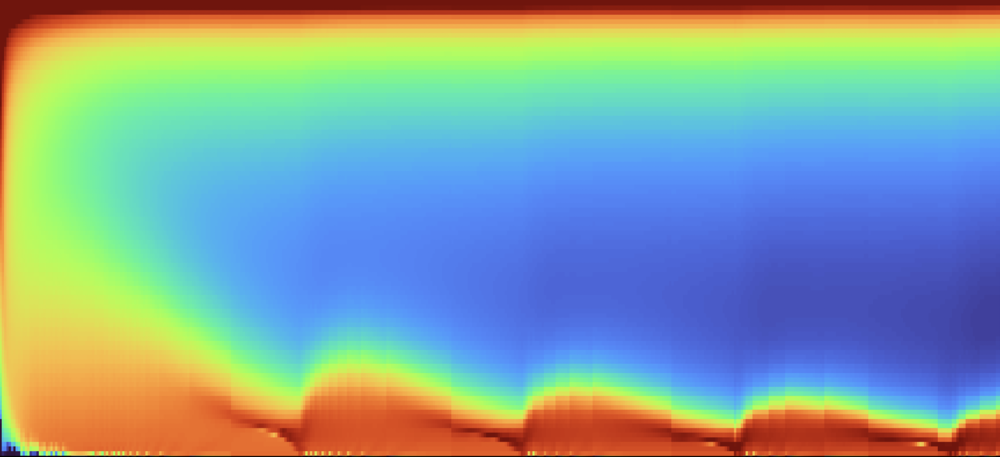
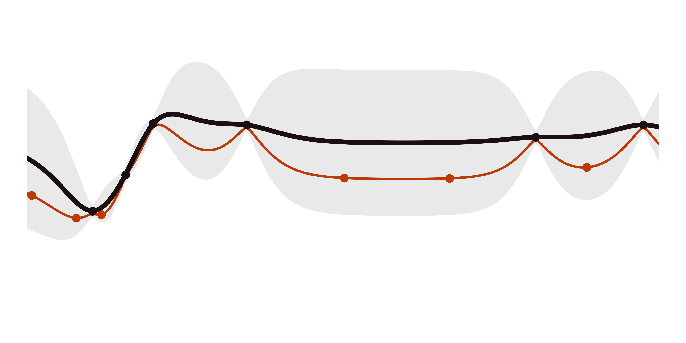
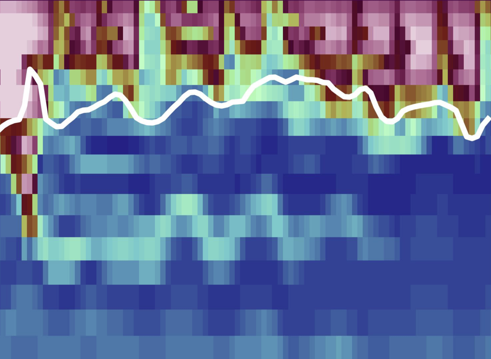

Hybrid parameterizations
In the Modular Ocean Model, the depth of the oceanic boundary layer is calculated from the rate of conversion of turbulent kinetic energy to potential energy. My current work replaces the algebraic formula for the energy conversion with a neural network to improve the physical realism of the scheme.

Related works
Bayesian optimization
Using Veropt, we calibrated the parameters of the JAX ocean model Veros to reduce the global mixed layer depth biases. We found that in the simulations for which the biases were minimized, the zonal winds were 10% weaker and the Gent-McWilliams mesoscale eddy diffusion coefficient was halved.

Related works
- Keynote presentation at the DRAKKAR Workshop 2025
- Mrozowska et al. (2025a) Bayesian optimization with GPU acceleration for ocean models. JGR: Machine Learning and Computation.
- Mrozowska et al. (2025b) Bayesian optimization of GPU-accelerated ocean models. GRC: Machine Learning for Actionable Science.
NIW-induced mixing
Shear generated by near-inertial waves can deepen the surface mixed layer in the ocean. In this work, we investigated how well this process is reproduced by two eddy-resolving ocean models. We found that NIW-induced mixing was underrepresented in both models. Additionally, NIW amplitude biases were sensitive to the turbulence closure used and its parameter values.
